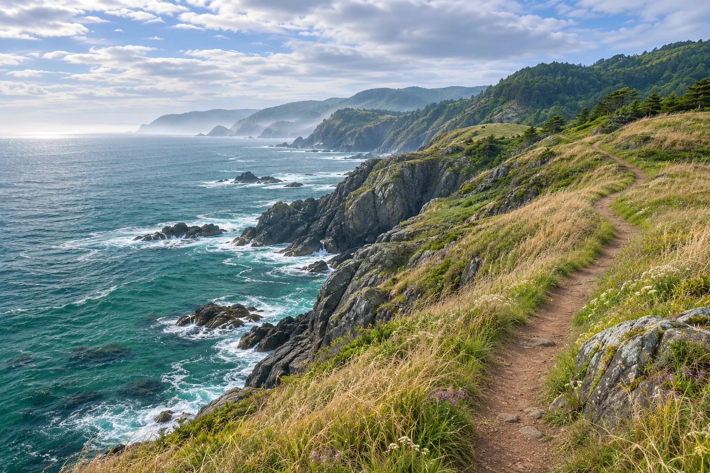

岬の先まで、潮風と。
入り江から展望台へ。海辺のガイド散歩

歩く距離2.4 km
約90分 休憩込み高低差 45m小学生以上
海が開けるまで
港からゆっくり登り、波の音を聞きながら岬の裏手へ。ガイドが風向きを見て、休憩する場所を選びます。
小舟の入り江 出発
港の掲示板でその日の風と順路を確認。石段は手すり側を一列で進みます。
風待ちの草地 約30分
海を背に、低い草の道へ。振り返ると、湾の地形が一望できます。
岬の見晴らし台 約55分
足を止めて、沖の白波を眺めます。帰りは林の道を通って港へ戻ります。